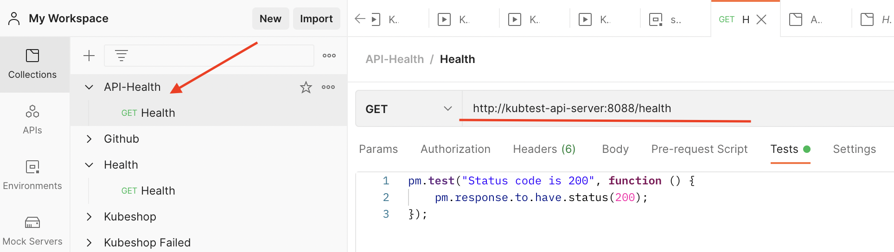

Postman Collections
You can watch simple TestKube intro to get into Postman collections with TestKube
TestKube is able to run Postman collections inside your Kubernetes cluster, you can use it to test internal or external services.
Test environment
Let's assume that our SUT (Service Under Test) is internal Kuberbetes service which has
NodePort Service created and is exposed on 8088 port. Service has name testkube-api-server
and is exposing /health endpoint which we want to test.
So to sum up - inside cluster we can call it like this:
curl http://testkube-api-server:8088/health
Output:
200 OK
Create new Postman test
First we need to create postman collection and export it as json

just right click and export given Collection to some file,
I've saved it into ~/Downloads/API-Health.postman_collection.json
Now we can create new testkube based on saved Postman Collection:
Create new TestKube test script
kubectl testkube scripts create --name api-incluster-test --file ~/Downloads/API-Health.postman_collection.json --type postman/collection
Output:
████████ ███████ ███████ ████████ ██ ██ ██ ██ ██████ ███████
██ ██ ██ ██ ██ ██ ██ ██ ██ ██ ██
██ █████ ███████ ██ █████ ██ ██ ██████ █████
██ ██ ██ ██ ██ ██ ██ ██ ██ ██ ██
██ ███████ ███████ ██ ██ ██ ██████ ██████ ███████
/tɛst kjub/ by Kubeshop
Script created 🥇
Script created! Now we can run as many times as we want
Running test
kubectl testkube scripts run api-incluster-test
████████ ███████ ███████ ████████ ██ ██ ██ ██ ██████ ███████
██ ██ ██ ██ ██ ██ ██ ██ ██ ██ ██
██ █████ ███████ ██ █████ ██ ██ ██████ █████
██ ██ ██ ██ ██ ██ ██ ██ ██ ██ ██
██ ███████ ███████ ██ ██ ██ ██████ ██████ ███████
/tɛst kjub/ by Kubeshop
Type : postman/collection
Name : api-incluster-test
Execution ID : 615d6398b046f8fbd3d955d4
Execution name: openly-full-bream
Script queued for execution
Use following command to get script execution details:
$ kubectl testkube scripts execution 615d6398b046f8fbd3d955d4
or watch script execution until complete:
$ kubectl testkube scripts watch 615d6398b046f8fbd3d955d4
(keep in mind that you can also name your runs, if no name is passed TestKube will autogenerate name)
Getting test results
Now we can watch/get script execution details:
kubectl testkube scripts watch 615d6398b046f8fbd3d955d4
Output:
Type : postman/collection
Name : api-incluster-test
Execution ID : 615d6398b046f8fbd3d955d4
Execution name: openly-full-bream
Watching for changes
Status: success, Duration: 598ms
Getting results
Name: openly-full-bream, Status: success, Duration: 598ms
newman
API-Health
→ Health
GET http://testkube-api-server:8088/health [200 OK, 124B, 297ms]
✓ Status code is 200
┌─────────────────────────┬────────────────────┬───────────────────┐
│ │ executed │ failed │
├─────────────────────────┼────────────────────┼───────────────────┤
│ iterations │ 1 │ 0 │
├─────────────────────────┼────────────────────┼───────────────────┤
│ requests │ 1 │ 0 │
├─────────────────────────┼────────────────────┼───────────────────┤
│ test-scripts │ 2 │ 0 │
├─────────────────────────┼────────────────────┼───────────────────┤
│ prerequest-scripts │ 1 │ 0 │
├─────────────────────────┼────────────────────┼───────────────────┤
│ assertions │ 1 │ 0 │
├─────────────────────────┴────────────────────┴───────────────────┤
│ total run duration: 523ms │
├──────────────────────────────────────────────────────────────────┤
│ total data received: 8B (approx) │
├──────────────────────────────────────────────────────────────────┤
│ average response time: 297ms [min: 297ms, max: 297ms, s.d.: 0µs] │
└──────────────────────────────────────────────────────────────────┘
Script execution completed in 598ms
Summary
As we can see TestKube can help us to run tests inside our cluster, it can also store our tests and tests results.